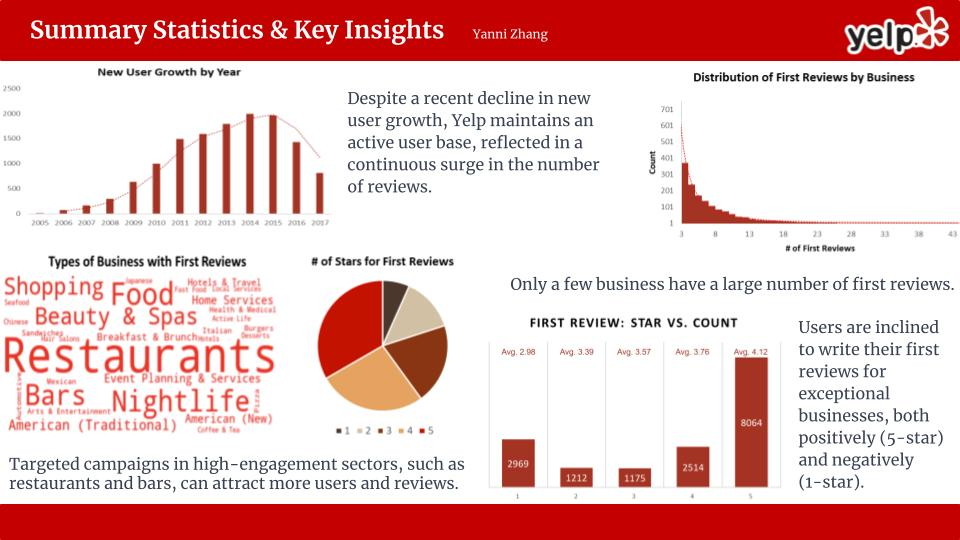

Yelp Project Report
Yanni Zhang
Yelp, an online platform for consumers to share their experiences with businesses, has been one of the most widely used business review applications since its launch in 2004. Users rely on Yelp to make informed decisions about where to eat, shop, or entertain. Engaging with local businesses, Yelp has become a valuable source of information for both consumers and businesses. To gain insights from Yelp’s vast collection of user-generated data, I have obtained a subset of the Yelp dataset and plan to conduct a thorough analysis to study consumer behavior, preferences, and trends. I hope this could inform and improve Yelp’s user acquisition strategy.
As a starting point, it is important to establish some summary statistics about the dataset. The data I am working with covers the period from 2005 to 2017, with a primary concentration of businesses in several locations, including Las Vegas, Phoenix, and Toronto.[1] In the dataset, I have identified 28,450 distinct businesses, 13,261 distinct users, and 48,862 distinct reviews. On average, each business has around 1.7 reviews, with the highest receiving 77 reviews and the lowest receiving just one. I also found 4,743 active users who have posted at least one review in the past year, that is, in 2017.
My analysis then looks at Yelp’s user growth by examining the number of new users in each year. It can be found that Yelp has experienced increasing user growth since 2005, peaking in 2014 and 2015 when Yelp attracted nearly 2,000 new users each year. Despite the declining trend in new user growth in the last 3 years, the number of reviews on Yelp continues to surge each year, indicating a highly active and engaged existing user base. For instance, in 2006, Yelp had only 40 reviews, but by 2017, it received a staggering 11,036 reviews in total.[2]
To unravel the driving force behind the first reviews by each user, I begin by filtering the dataset to obtain the 15,934 first reviews and subsequently search for commonalities among them. My findings indicate that exceptional businesses, both positively and negatively, tend to elicit commentary from customers. Specifically, out of the 15,934 first reviews, over 8,000 are 5-star reviews, while almost 3,000 are 1-star reviews.[3] I then delved into the business categories of the first reviews. As each business id may belong to multiple categories, I utilized a visually-appealing word cloud to showcase the most commonly mentioned categories.[4] My analysis revealed that users predominantly write their first reviews for businesses in the restaurant, bar, beauty and spas, and shopping sectors, among others. This suggests that the service industry is likely to receive more feedback from customers.[5] I also count the number of businesses by the number of first reviews they have received, and I noticed that only a few restaurants have a relatively large number of first reviews. Most businesses have received less than 10 first reviews, while the business with the most first reviews has received more than 40. Therefore, I can conclude that the distribution of first reviews among businesses is heavily skewed to the right.
Above all, I have identified several key insights that can inform Yelp’s business strategy. Firstly, I find that exceptional businesses tend to elicit commentary from customers, which presents an opportunity for Yelp to encourage more users to share their experiences by offering incentives or rewards for writing a review. Additionally, my analysis shows that users predominantly write their first reviews for businesses in the restaurant, bar, beauty and spas, and shopping sectors. Yelp can focus on these industries and create targeted campaigns to attract more users and reviews from these sectors. Moreover, Yelp can leverage data insights to improve its recommendation engine and provide more personalized recommendations to users, thereby promoting a thriving online community. By implementing these strategies, Yelp can enhance user experience and attract more new users, ultimately leading to sustainable growth for the platform.
Appendix 1. Tables
Table 1. Top five cities with the highest number of businesses
City | Number of Business |
Las Vegas | 6120 |
Phoenix | 3044 |
Toronto | 2565 |
Scottsdale | 1595 |
Charlotte | 1310 |
Table 2. Number of new users and reviews in each year
Year | Number of New Users | Number of Reviews |
2005 | 13 | / |
2006 | 75 | 40 |
2007 | 164 | 139 |
2008 | 299 | 483 |
2009 | 636 | 661 |
2010 | 999 | 1400 |
2011 | 1490 | 2462 |
2012 | 1591 | 3002 |
2013 | 1792 | 4223 |
2014 | 1995 | 6106 |
2015 | 1963 | 8878 |
2016 | 1432 | 10432 |
2017 | 812 | 11036 |
Table 3. Number of first reviews according to the number of stars awarded
Stars | Number of First Review | Average Business Stars |
1 | 2969 | 2.98 |
2 | 1212 | 3.39 |
3 | 1175 | 3.57 |
4 | 2514 | 3.76 |
5 | 8064 | 4.12 |
Table 4. Top 30 business categories for business receiving first reviews
Business Categories | Frequency |
Restaurants | 5997 |
Food | 1895 |
Nightlife | 1695 |
Bars | 1566 |
Beauty & Spas | 1015 |
Shopping | 982 |
American (Traditional) | 944 |
Event Planning & Services | 871 |
Home Services | 827 |
American (New) | 827 |
Breakfast & Brunch | 748 |
Hotels & Travel | 646 |
Health & Medical | 584 |
Mexican | 581 |
Sandwiches | 574 |
Automotive | 563 |
Italian | 561 |
Pizza | 560 |
Burgers | 513 |
Arts & Entertainment | 494 |
Local Services | 486 |
Coffee & Tea | 480 |
Seafood | 434 |
Active Life | 406 |
Hotels | 386 |
Chinese | 386 |
Japanese | 367 |
Hair Salons | 364 |
Fast Food | 355 |
Desserts | 352 |
Table 5. Number of occurrences of some business keywords in the first reviews
Business Keyword | Number of occurrences in First Review |
restaurants | 9063 |
services | 3335 |
bars | 3191 |
hotels | 1302 |
Appendix 2. SQLite Code
-- total distinct user count
SELECT COUNT(DISTINCT user_id)
FROM user;
-- total distinct business count
SELECT COUNT(DISTINCT business_id)
FROM business;
-- total distinct review count
SELECT COUNT(DISTINCT review_id)
FROM review;
-- total distinct reviewer count
SELECT COUNT(DISTINCT user_id)
FROM review;
-- active user count (users who have posted reviews in 2017)
SELECT COUNT(DISTINCT user_id)
FROM review
WHERE substr(date, 1, 4) = '2017';
-- calculate review per business
CREATE TEMPORARY TABLE review_business AS SELECT business_id,
count( * ) AS freq
FROM review
GROUP BY business_id;
SELECT MAX(freq),
MIN(freq),
AVG(freq)
FROM review_business;
-- top five city with the highest number of businesses
SELECT city,
count( * ) AS cout_of_business
FROM business
GROUP BY city
ORDER BY cout_of_business DESC
LIMIT 5;
-- how many new user we have each year
SELECT substr(yelping_since, 1, 4) AS year, count(*) AS NumNewUser
FROM user
GROUP BY year;
-- how many reviews we have each year
SELECT substr(date, 1, 4) AS year, count(*) AS NumReview
FROM review
GROUP BY year;
-- presenting the above two in one table
SELECT *
FROM
(SELECT substr(yelping_since, 1, 4) as year
FROM user
UNION
SELECT substr(date, 1, 4)
FROM review)
LEFT JOIN
(SELECT substr(yelping_since, 1, 4) AS year, count(*) AS NumNewUser
FROM user
GROUP BY year) AS T1
USING ('year')
LEFT JOIN
(SELECT substr(date, 1, 4) AS year, count(*) AS NumReview
FROM review
GROUP BY year) AS T2
USING ('year');
-- first review from each user
SELECT *
FROM review
INNER JOIN
(SELECT user_id, MAX(date) AS first_date
FROM review
GROUP BY user_id) AS A
ON review.user_id = A.user_id
AND review.date = A.first_date;
-- first review from each user joining business information
SELECT *
FROM (SELECT *
FROM review
INNER JOIN
(SELECT user_id, MAX(date) AS first_date
FROM review
GROUP BY user_id) AS A
ON review.user_id = A.user_id
AND review.date = A.first_date)
LEFT JOIN business USING ("business_id");
-- what rating (star) does the first review give? What are the average stars for the business receiving the new comments?
SELECT FR.stars, count(*) AS frequency, ROUND(AVG(business.stars), 2) AS avg_business_stars
FROM (SELECT *
FROM review
INNER JOIN
(SELECT user_id, MAX(date) AS first_date
FROM review
GROUP BY user_id) AS A
ON review.user_id = A.user_id
AND review.date = A.first_date) AS FR
LEFT JOIN business USING ("business_id")
GROUP BY FR.stars
ORDER BY FR.stars;
-- which business attracts more new users to leave the first comment?
SELECT FR.business_id, count(*) AS frequency, B.stars, B.categories
FROM (SELECT *
FROM review
INNER JOIN
(SELECT user_id, MAX(date) AS first_date
FROM review
GROUP BY user_id) AS A
ON review.user_id = A.user_id
AND review.date = A.first_date) AS FR
LEFT JOIN business AS B USING ("business_id")
GROUP BY FR.business_id
ORDER BY frequency DESC;
-- number of occurrences of some business keyword in the first reviews
CREATE TEMPORARY TABLE T1 AS SELECT FR.business_id,
count( * ) AS frequency,
B.stars,
B.categories
FROM (
SELECT *
FROM review
INNER JOIN
(
SELECT user_id,
MAX(date) AS first_date
FROM review
GROUP BY user_id
)
AS A ON review.user_id = A.user_id AND
review.date = A.first_date
)
AS FR
LEFT JOIN
business AS B USING (
business_id
)
GROUP BY FR.business_id
ORDER BY frequency DESC;
SELECT sum(frequency) AS occur_restaurants
FROM T1
WHERE categories LIKE '%restaurants%';
SELECT sum(frequency) AS occur_services
FROM T1
WHERE categories LIKE '%services%';
SELECT sum(frequency) AS occur_bars
FROM T1
WHERE categories LIKE '%bars%';
SELECT sum(frequency) AS occur_hotels
FROM T1
WHERE categories LIKE '%hotels%';
-- business category keyword occurrence
SELECT word, COUNT(*) AS frequency
FROM(WITH split(word, csv) AS
(
SELECT
-- in final WHERE, we filter raw csv (1st row) and terminal ',' (last row)
'',
-- here you can SELECT FROM e.g. another table: col_name||',' FROM X
(SELECT GROUP_CONCAT(categories, ',')
FROM
(SELECT FR.business_id, count(*) AS frequency, B.categories
FROM (SELECT *
FROM review
INNER JOIN (SELECT user_id, MAX(date) AS first_date
FROM review
GROUP BY user_id) AS A
ON review.user_id = A.user_id AND review.date = A.first_date) AS FR
LEFT JOIN business AS B USING ("business_id")
GROUP BY FR.business_id)
)||',' -- terminate with ',' indicating csv ending
-- 'recursive query'
UNION ALL SELECT
substr(csv, 0, instr(csv, ',')), -- each word contains text up to next ','
substr(csv, instr(csv, ',') + 1) -- next recursion parses csv after this ','
FROM split -- recurse
WHERE csv != '' -- break recursion once no more csv words exist
) SELECT word FROM split
WHERE word!='')
GROUP BY word
ORDER BY frequency DESC;
[1] Appendix: Table 1 shows the top five cities with the highest number of businesses.
[2] Appendix: Table 2 shows the number of new users and reviews each year.
[3] Appendix: Table 3 shows the number of first reviews according to the number of stars awarded.
[4] Appendix: Table 4 shows the top 30 business categories for business receiving first reviews.
[5] Appendix: Table 5 shows the number of occurrences of some business keywords in the first reviews.